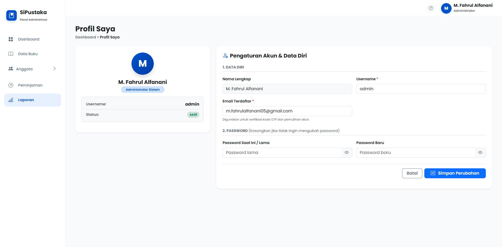
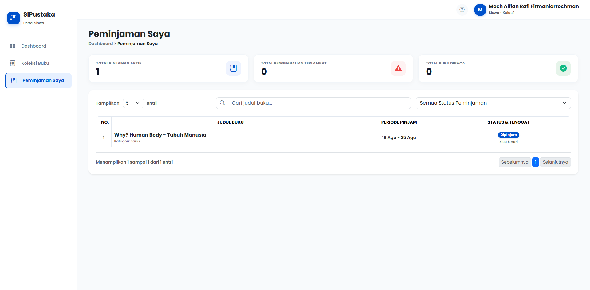
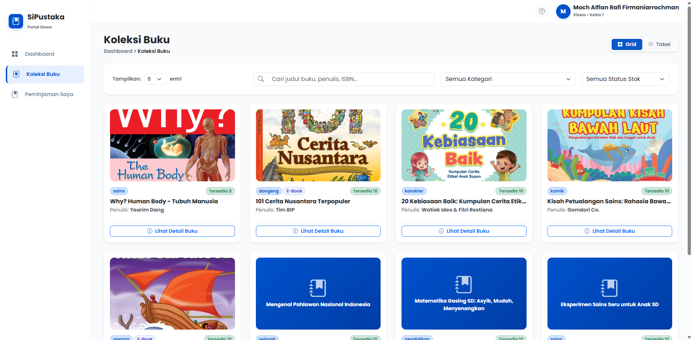
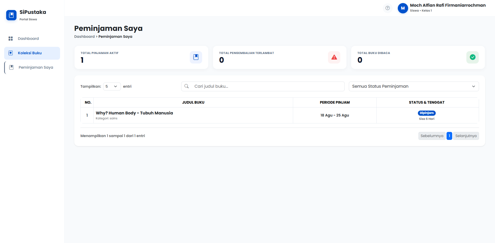
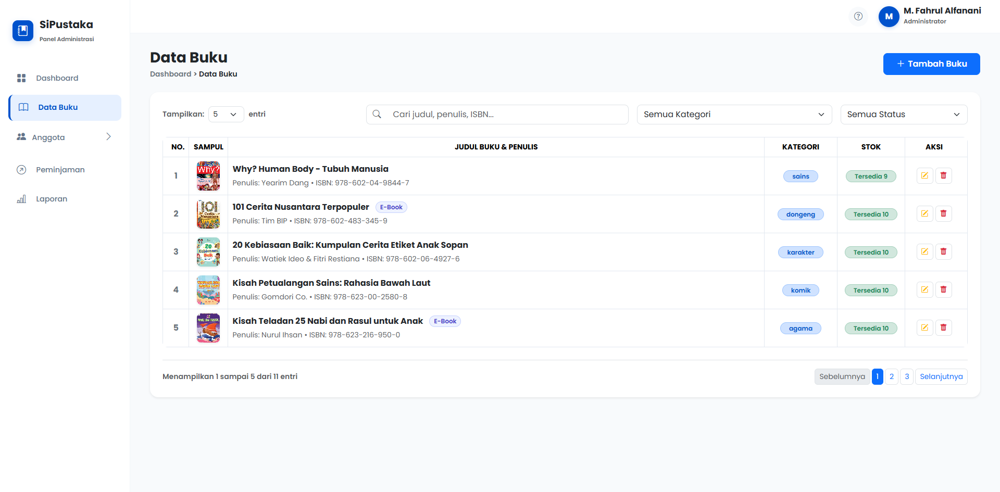
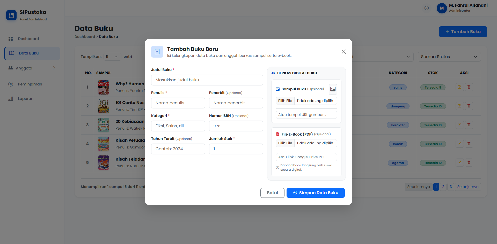
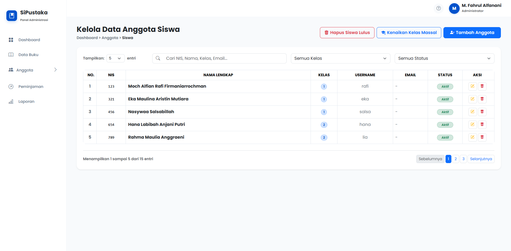
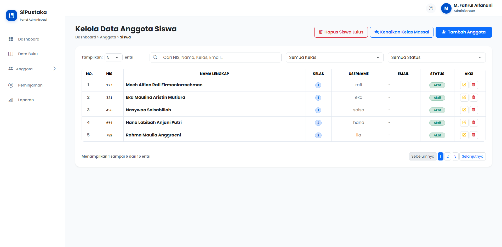
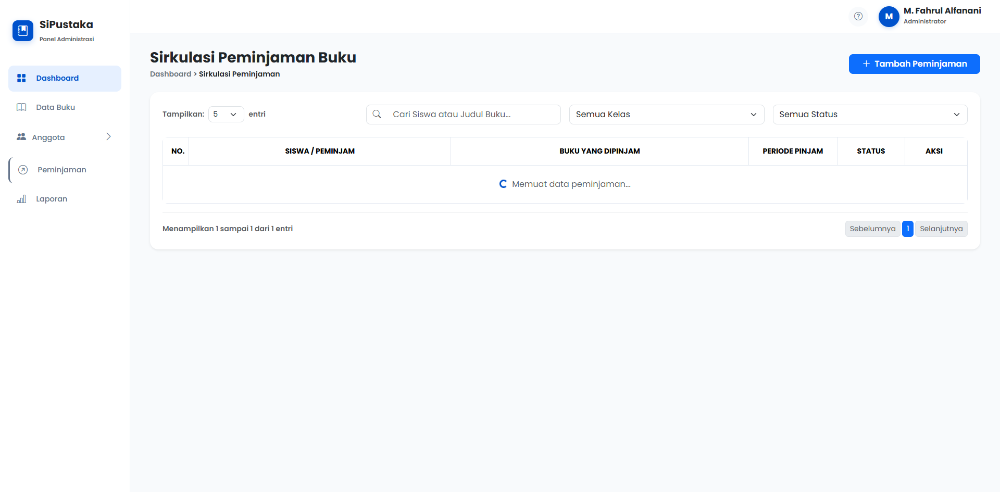
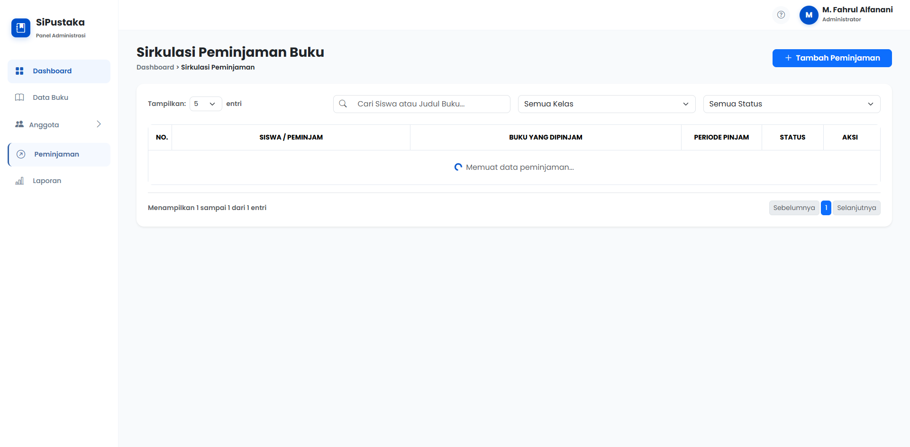

BUKU PANDUAN
SIPUSTAKA
Pedoman Operasional Sistem Informasi Sirkulasi Buku Perpustakaan untuk Administrator, Petugas & Siswa

Kata Pengantar
Puji syukur kita panjatkan ke hadirat Tuhan Yang Maha Esa atas terselesaikannya pengembangan dan penyusunan Buku Panduan Penggunaan Sistem Informasi Perpustakaan (SiPustaka) SDN Kedungsumur 03.
Aplikasi SiPustaka dirancang untuk mendigitalkan dan mempermudah tata kelola sirkulasi buku perpustakaan, pencatatan transaksi peminjaman, pengembalian mandiri, manajemen buku fisik dan e-book digital, serta rekapitulasi data anggota siswa secara otomatis dan terstruktur.
Buku panduan berukuran standar A5 (148 mm × 210 mm) ini disusun sebagai pedoman praktis langkah demi langkah (*step-by-step*) bagi Petugas/Administrator Perpustakaan dan seluruh Siswa agar dapat memanfaatkan seluruh fitur sistem secara optimal.
https://sipustaka-sdnkedungsumur03.vercel.app
Daftar Isi
- BAB I : PENDAHULUAN & PENGENALAN SISTEM
- 1.1 Tentang Sistem SiPustaka
- 1.2 Spesifikasi & Akses Perangkat
- 1.3 Hak Akses Akun (Admin vs Siswa)
- BAB II : AUTENTIKASI & KEAMANAN AKUN
- 2.1 Alur Masuk Sistem (Login)
- 2.2 Lupa Password & Verifikasi OTP Email
- 2.3 Profil Diri & Ganti Password Mandiri
- BAB III : PANDUAN PENGGUNAAN PORTAL SISWA
- 3.1 Dashboard Siswa & Status Membaca
- 3.2 Menjelajahi Katalog Koleksi Buku
- 3.3 Membaca Buku Digital (E-Book Reader)
- 3.4 Memantau Peminjaman & Tanggal Jatuh Tempo
- BAB IV : PANDUAN PORTAL ADMINISTRATOR & PETUGAS
- 4.1 Dashboard Utama & Statistik Sirkulasi
- 4.2 Manajemen Master Data Koleksi Buku
- 4.3 Formulir Tambah & Unggah Cover 10MB / PDF 25MB
- 4.4 Master Data Siswa & Kenaikan Kelas Massal
- 4.5 Sirkulasi Peminjaman Buku (Durasi 7 Hari)
- 4.6 Pengembalian Cepat (Quick Return 1-Klik)
- 4.7 Pembuatan & Pencetakan Laporan Rekapitulasi
- BAB V : TANYA JAWAB (FAQ) & PENANGANAN KENDALA
Pendahuluan & Pengenalan Sistem
1.1 Tentang Sistem SiPustaka
SiPustaka adalah platform aplikasi berbasis komputasi awan (*Cloud Web App*) yang dikembangkan khusus untuk SDN Kedungsumur 03. Sistem ini menggantikan proses pembukuan manual buku perpustakaan menjadi serba digital, transparan, dan dapat diakses dari mana saja secara *real-time*.
1.2 Spesifikasi & Akses Perangkat
Aplikasi ini bersifat *Responsive Web App* yang dapat dioperasikan melalui berbagai perangkat tanpa perlu instalasi aplikasi khusus:
- Laptop / Komputer PC: Menggunakan peramban Google Chrome, Microsoft Edge, atau Mozilla Firefox (Sangat direkomendasikan untuk Admin).
- Smartphone / Tablet Android / iOS: Tampilan otomatis menyesuaikan layar ponsel secara nyaman dan ergonomis.
1.3 Hak Akses & Peran Pengguna
| Peran (Role) | Akses Kredensial | Kewenangan & Fitur |
|---|---|---|
| Administrator / Petugas | Username / Email Admin + Kata Sandi | Akses penuh ke seluruh menu: Dashboard statistik, Master Data Buku, Master Data Siswa, Sirkulasi Pinjam/Kembali, Kenaikan Kelas Massal, dan Cetak Laporan. |
| Siswa (Anggota) | Username / NIS Siswa + Kata Sandi | Melihat Dashboard Siswa, menjelajah Katalog Buku, membaca E-Book PDF online, dan memantau status peminjaman buku aktif milik pribadi. |
Autentikasi & Keamanan Akun
2.1 Alur Masuk Sistem (Login)
Setiap pengguna (Admin maupun Siswa) masuk melalui satu pintu gerbang masuk terpadu (*Unified Login Portal*):
2.2 Lupa Password & Verifikasi Kode OTP Email
Jika pengguna lupa kata sandi, sistem menyediakan fitur pemulihan mandiri menggunakan kode verifikasi 6-digit yang dikirimkan langsung ke email resmi:

2.3 Profil Diri & Ganti Password Mandiri
Pengguna dapat memperbarui informasi nama lengkap, email, username, serta mengganti kata sandi secara berkala pada menu "Profil Saya".

Panduan Penggunaan Portal Siswa
3.1 Dashboard Siswa & Status Membaca
Setelah siswa berhasil login, dashboard siswa akan menampilkan informasi ramah:
- Total Pinjaman Aktif: Jumlah buku fisik yang sedang dibawa/dipinjam saat ini.
- Status Tenggat: Peringatan sisa hari pinjaman (Badge Biru = Aman, Badge Merah = Jatuh Tempo).
- Banner Motivasi Membaca: Sambutan personal sesuai nama siswa.

3.2 Menjelajahi Katalog Koleksi Buku
Siswa dapat membuka menu "Koleksi Buku" untuk mencari bahan bacaan:
- Pencarian Cepat: Ketik judul buku, pengarang, atau ISBN di kolom pencarian.
- Filter Kategori: Pilih kategori khusus (Sains, Dongeng, Komik, Sejarah, Karakter, Agama, dll).
- Badge Status Ketersediaan: Menampilkan sisa stok fisik yang tersedia di perpustakaan.

3.3 Membaca Buku Digital (E-Book Reader)
Buku yang bertanda lencana "E-Book" dapat dibaca langsung oleh siswa secara online melalui gawai/komputer:

3.4 Menu Peminjaman Saya
Menu "Peminjaman Saya" memuat daftar riwayat seluruh buku yang sedang dipinjam maupun yang sudah dikembalikan oleh siswa, lengkap dengan tanggal peminjaman dan batas waktu pengembalian.

Panduan Administrator & Petugas
4.1 Dashboard Utama & Analisis Statistik Sirkulasi
Dashboard Administrator memberikan ringkasan menyeluruh operasional perpustakaan:
- Metrik Statistik 4 Kartu: Total Judul Buku, Total Siswa Terdaftar, Total Buku Sedang Dipinjam, dan Total Pengembalian Terlambat.
- Tabel Peminjaman Aktif: Memantau secara langsung buku yang sedang beredar di tangan siswa.
- Grafik Donat Kategori: Komposisi persebaran koleksi buku perpustakaan.

4.2 Manajemen Master Data Koleksi Buku
Menu "Data Buku" digunakan untuk mengelola seluruh inventaris perpustakaan:
- Pencarian instan berdasarkan Judul, Penulis, atau ISBN.
- Penyaringan cepat berdasarkan Kategori dan Status Ketersediaan Stok.
- Tombol Aksi: Edit (Kuning) dan Hapus (Merah) dengan proteksi anti-hapus jika buku sedang dipinjam.

4.3 Formulir Tambah & Unggah Berkas Buku (Drive)
Untuk menambahkan buku baru ke sistem:

4.4 Master Data Siswa & Kenaikan Kelas Massal
Menu "Anggota" memuat basis data siswa SDN Kedungsumur 03 dari Kelas 1 hingga Kelas 6. Dilengkapi fitur unggulan Kenaikan Kelas Massal Otomatis saat pergantian tahun ajaran baru:
Kelas 1 naik ke Kelas 2, Kelas 2 ke Kelas 3, ..., dan Kelas 6 otomatis dinyatakan Lulus (Alumni). Admin juga dapat membersihkan data siswa yang telah lulus dengan tombol pembersihan aman.


4.5 Sirkulasi Peminjaman & Pengembalian Buku
Proses pencatatan peminjaman dirancang cepat tanpa perlu mengetik manual:


4.6 Pengembalian Cepat (Quick Return 1-Klik)
Ketika siswa mengembalikan buku ke meja perpustakaan, petugas cukup menekan tombol hijau "Kembalikan" di baris transaksi siswa tersebut. Sistem otomatis mengubah status menjadi "dikembalikan", mencatat tanggal kembali aktual, dan mengembalikan stok fisik buku ke rak.
4.7 Pembuatan & Cetak Laporan Perpustakaan
Menu "Laporan" memungkinkan petugas menyaring data transaksi perpustakaan berdasarkan rentang tanggal tertentu dan status (Semua, Dipinjam, Selesai, Terlambat). Klik tombol "Cetak Laporan" untuk mencetak lembar rekapitulasi bertandatangan resmi Kepala Sekolah / Petugas.

Tanya Jawab (FAQ) & Kendala
Jawab: Administrator dapat membantu mengganti atau mengatur ulang kata sandi siswa secara manual melalui formulir Edit Data Siswa pada menu Master Data Anggota.
Jawab: Sistem SiPustaka memiliki proteksi integritas relasi (*Cascading Delete Check*). Buku yang sedang dipinjam oleh siswa tidak dapat dihapus sebelum buku tersebut dikembalikan terlebih dahulu.
Jawab: Klik tombol biru "Cetak / Simpan PDF (A5)" di pojok kanan atas halaman ini. Pada dialog printer Chrome:
- Destination: Save as PDF atau pilih printer fisik Anda.
- Paper Size: Pilih A5.
- Options: Centang "Background graphics" agar warna dan desain cover tercetak sempurna.